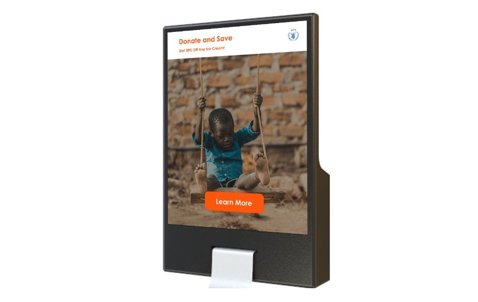
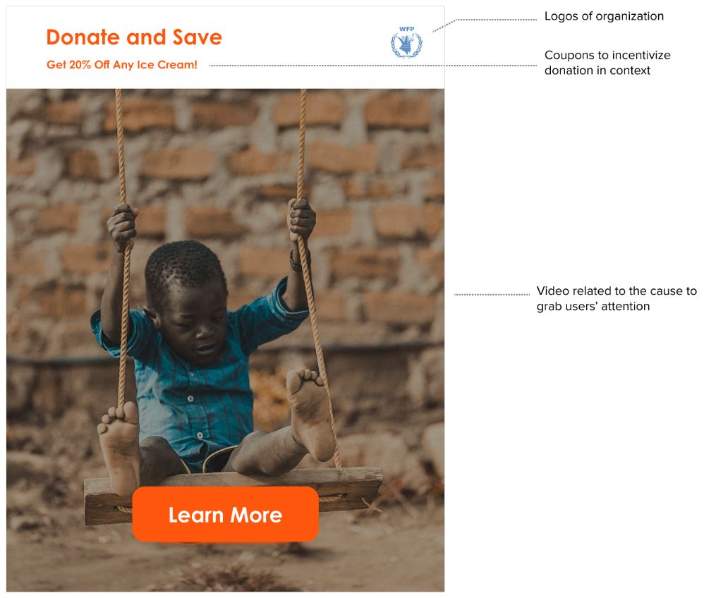
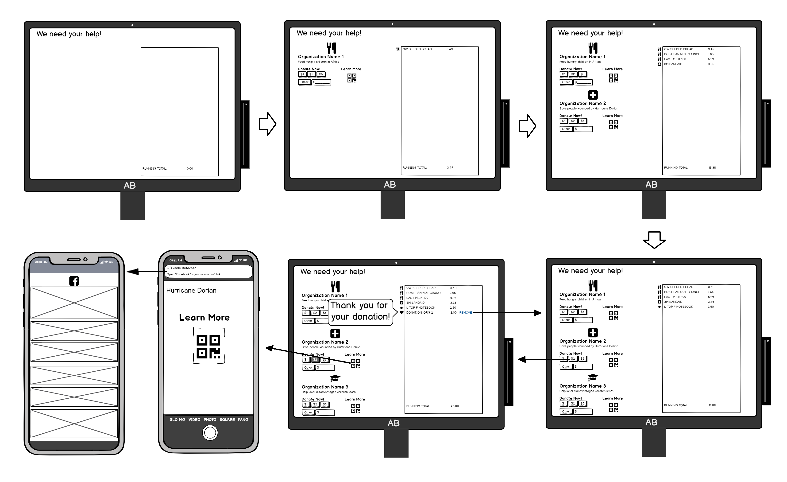
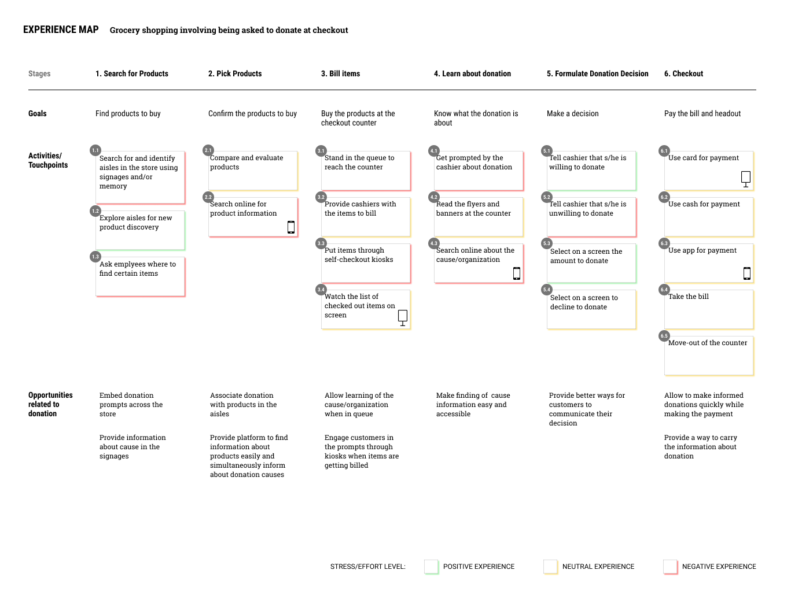
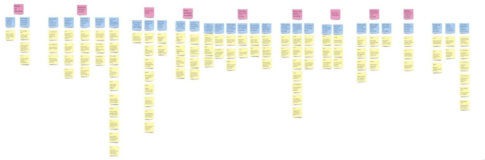

My Roles
UX Researcher
UX Designer
Prototyper
Team
Size: 4
The team consists of people with engineering and design backgrounds. Aside from performing UX research and design with the others, I contributed my organizational skill, analytical skill, logical thinking, and technical perspectives to the team. Teammates have entrusted me with the tasks of outlining research plans, analyzing research findings, and the final review of our work reports.
Tools and Languages
JavaScript
HTML5
CSS3
Figma
Balsamic
Miro
My Contributions and Artefacts
System Prototye Through Web Development
Designed animations and interactions according to a static mockup and rapidly developed a functional prototype (only for viewing on iPad Pro) using HTML, CSS, and Javascript.
Learned how to rapidly create an interface using web technology.

System & Interface Design
Discussed features to be included in the system design with the team according to feedback collected through mockups demonstration.
Learned to consider the needs of the user and the business and charity stakeholders in design creation.

Design Alternatives and Mockups
Created the mockup for one of the 3 solutions the team conceived, in which users interact with the display at checkout counters, and presented the mockups to users to acquire feedback.
Learned how to use low fidelity mockups to convey design concepts.

Interviews and ideation
Conducted semi-structured interviews to explore the problem space, identified design implications using an affinity map and an experience map, and created 3 alternative solutions with the team.
Learned to use affinity maps and experience maps to analyze findings from user research and facilitate the ideation process.

